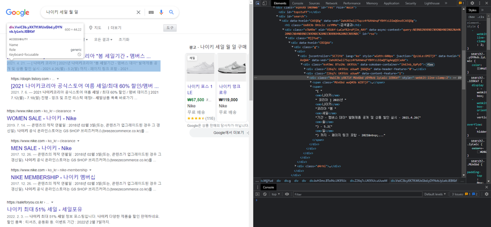
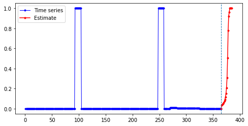
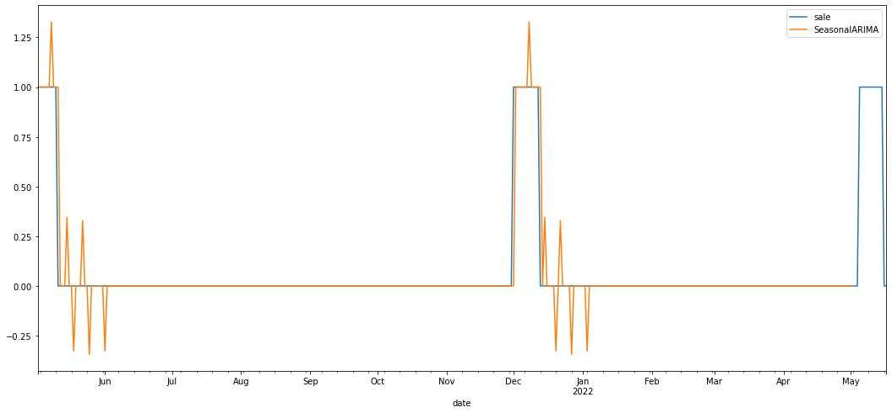
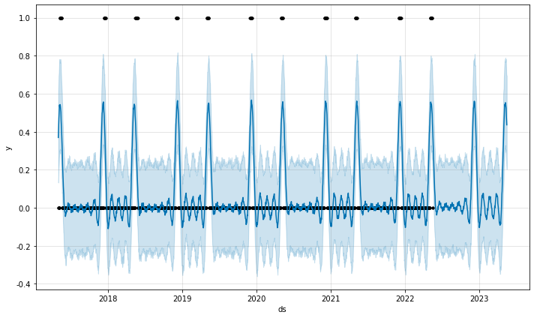

Web-application 'Sale Check'
Description
Everyone wants to buy things at a low price during the sale. But the sale period is unpredictable.
Also, even if there are regular sales, it is hard for people to remember all of them. Therefore,
this project crawled past sales data and generated a time series prediction model using the data. The model provides sales
forecasting data for the next year through applications, represents sales forecasting on the calendar,
and provides easy access to the official website.
What we used...
We utilized React.js to implement screen, and Beautiful Soup and Selenium
for Data Crawling.
How?
Data Crawling

We crawled brands' data wheter they were on sale or not from Google News.
We collected data from 01.01.2017 to 10.01.2018.
Time Series Prediction Models
We utilized Long Short-Term Memory (LSTM), Seasonal Auto-Regressive Integrated Moving Average (SARIMA),
and Prophet module from facebook. We made models with one feature(whether the brand is sale or not)
and compared the results.
LSTM
Ex. Kitty Bunny Pony (Brand)

LSTM models used itself as trained data, so it understood the shape of ther pattern well.
But the further the future was predicted, the less accurate it was.
SARIMA

SARIMA is also fine predicting the near future, but it has poor understanding of patterns at the further future.
Prophet

Prophet propet derived a probability of close to 20% to 50%
while LSTM or SARIMA gave a probability of close to 100% when it was likely to be on sale.
And the possibility of sale is over 20% is relatively high in propeht. With that standard(20%), prophet model
predicted sale status very well, also in the further future.
Results
We checked the result with actual sale status in October and Novemeber 2022,
prophet showed the most accurate prediction result. Additionally, compared to the brands data
which have regular sales in fixed month, Prophet showed the fine result, too.